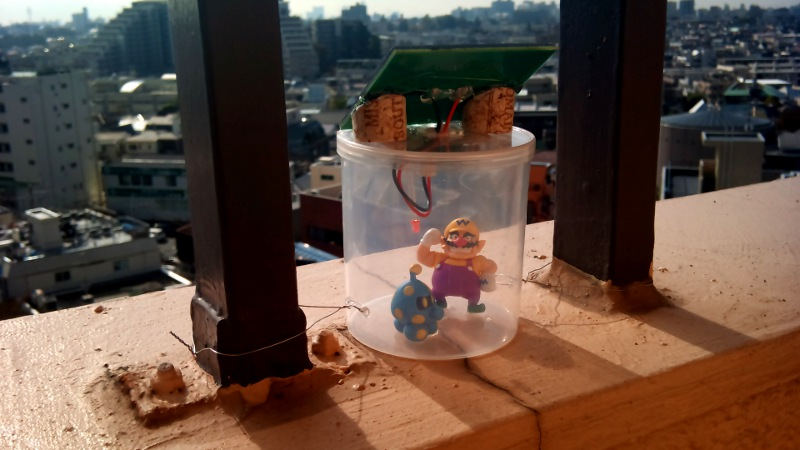

Idea
I have solar panes, transistors, leds and maybe some high capacity capacitor ... why not load the cap during the day and make a led glow at night ... can be nice on the balcony, no?
Idea is not new and some guys already did that, let's see how they did it:
2011/10/02 : 1 h to have it work on breadboard, 1h soldering and working just fine. Take care of the PNP pinout, on my diagram I reversed it left-right and mislead me. Now I wrote the BCE pinout, easier to read. It will be set on my balcony or in my toilet, dunno yet... just have to case it in something nice.
2011/10/21 : well well well, not so much of a success. It works fine, loads fine, lights itself fine... that's ok. But if not in direct light, doesnt charge that much, and for the same reason turns on quite early. Conclusion, I never see it turned on, because it doesn't have so much autonomy. The 1F cap is too few maybe, the 470 ohm current limiter toward the led too light, the white led too greedy and the whole device shall be put more directly to the light. It works, but not as good as expected.
2011/10/31 : ok, so after adding an additional resistor before the led and changing the white led (forward voltage of 2.7v ?) by a red one (1.5v ?) it's glowing muuuuch longer.
Pictures

With a red led, facing south, over Tokyo (now loading...)
The GardenFireFly works very nicely, breadboard or soldered, also in your toilet. Just take care of the pinout of the transistor.
Circuit
D3 is not necessary and can be replaced by a wire (in my case). Still not sure of the purpose of th 10 Mohm resistor, seems like a pulldown but isn't it a bit big for a pulldown ? (my case it's a 5.1 Mohm)
EDIT: I augmented the current limiter resistor to 100 %20 470 (serial) to have it light a bit longer. We'll see...
See as a falstad circuit !
click for higher res
{kind=link}